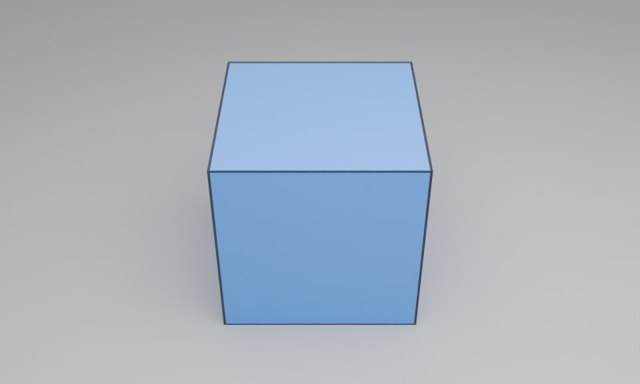
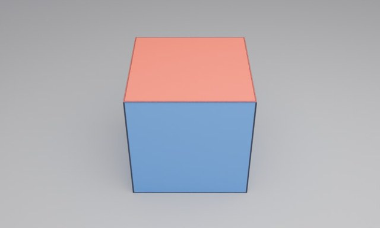

Bonus lesson
Flip and Recalculate Normals
Every face has a normal, the direction it points. Faces are always perpendicular to their normal, but the normal can point either way. When one face points the wrong way, shading and some tools can behave oddly. The Mesh › Normals menu in Edit Mode has tools to fix this.


Flip
Mesh › Normals › Flip reverses the normals of all selected faces. Because only the selected faces are flipped, you control the direction of each normal precisely. The orientation of the face stays perpendicular to its normal.
Recalculate Outside and Inside
Shift+N (Recalculate Outside) and Shift+Ctrl+N (Recalculate Inside) recalculate the normals of the selected faces so that they point outside, or inside, the volume the face belongs to. The volume does not need to be closed. Inside and outside are worked out from the angles with adjacent faces, so the face needs at least one adjacent face that is not coplanar. The manual notes that on a Grid primitive, recalculating normals gives no meaningful result.
Other normal tools
The same menu has Set from Faces, which sets custom normals at corners to match the face normal, and Rotate (R then N), an interactive tool that rotates the selected normals.
Read the manual page on Editing Normals.
Try it
This exercise is our own suggestion and has not been run step by step in the GUI. Add a cube, enter Edit Mode, select the top face and choose Mesh › Normals › Flip. Then select everything and press Shift+N to recalculate the normals outside. Use Ctrl+Z to step back.